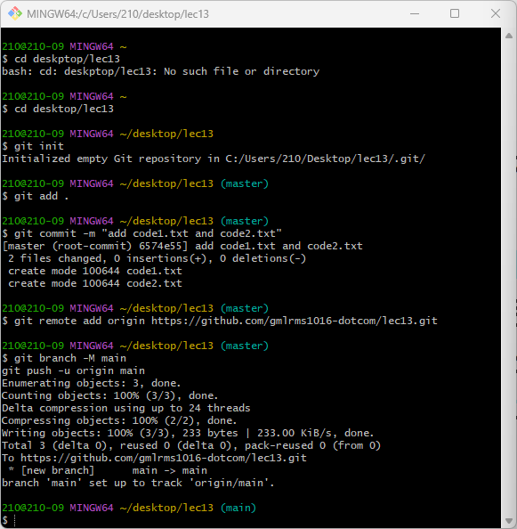

시험범위 : 13주차 Git — 버전관리 흐름 · 명령어 · 브랜치/병합/리베이스 · 실습 1~4
작업 디렉토리 → 스테이징 영역(Index) → 지역(로컬) 저장소 → 원격 저장소 4단계로 흐릅니다. 각 단계 사이를 옮기는 명령어를 외우는 게 핵심이에요.
| 흐름 | 명령어 | 설명 |
|---|---|---|
| 작업 → 스테이징 | git add . | 변경 파일을 커밋 후보(Index)에 올림 |
| 스테이징 → 지역 | git commit -m | 올린 변경을 하나의 커밋으로 저장 |
| 지역 → 원격 | git push | 로컬 커밋을 GitHub에 업로드 |
| 원격 → 지역 | git pull | 원격 변경을 가져와 병합 |
| 원격 → 새 로컬 | git clone | 원격을 통째로 복제해 새 저장소 생성 |
git checkout 대신 git switch를 씁니다.
전환은 git switch <브랜치>, 생성+전환은 git switch -c <브랜치>
(예전 checkout -b의 -b → switch에서는 -c). 13주차가 시험의 핵심이라 기본 펼침입니다.| 명령어 | 설명 |
|---|---|
git config --global user.name "이름" | 커밋 작성자 이름 전역 설정 (없으면 commit 불가) |
git config --global user.email "이메일" | 커밋 작성자 이메일 전역 설정. --global=이 PC 모든 프로젝트 |
| 명령어 | 설명 |
|---|---|
git init | 현재 폴더를 Git 로컬 저장소로 초기화 (.git 생성) |
git add <파일> / git add . | 특정 파일 / 모든 변경을 스테이징 영역에 올림 |
git status | 작업 트리(working tree)의 변경 상태 확인 |
git commit -m "메시지" | 스테이징된 변경을 하나의 커밋으로 저장 |
git commit --amend -m "수정 메시지" | 마지막 커밋 메시지를 수정 (내용은 그대로, 메시지만 변경) |
git push | 로컬 커밋을 원격에 업로드 (최초 push 시 브라우저로 GitHub 인증) |
git pull | 원격 변경을 가져와 로컬에 병합 |
git clone <url> | 원격 저장소를 복제해 새 로컬 저장소 생성 |
| 명령어 | 설명 |
|---|---|
git diff | 두 커밋·브랜치·작업 트리 간의 차이점 표시 |
git log / git log --oneline | 커밋 이력 조회 / 한 줄로 간단히 |
git log --all --oneline --graph -n 4 | 모든 브랜치 이력을 그래프로 최근 4개 |
| 명령어 | 설명 |
|---|---|
git reset <파일> / git reset | 스테이지 취소(add 취소) — staged → unstaged |
git reset --soft <시점> | 커밋 취소, staging은 유지 |
git reset --mixed <시점> (기본값) | 커밋·staging 취소, 로컬 파일 변경은 유지 |
git reset --hard <시점> | 커밋·staging·로컬 변경 모두 취소 |
시점 표기 HEAD^ / HEAD~3 | 최신 1개 전 / 최근 3개 전 (예 git reset --mixed HEAD^) |
| 명령어 / 동작 | 설명 |
|---|---|
.gitignore 파일 | Git이 무시할 파일·폴더 지정 (예 *.log, .env, build/) |
rm -rf .git | 로컬 저장소 삭제(이력 초기화). 원격은 GitHub Settings → Delete this repository |
| Collaborator 추가 | GitHub Settings → Collaborators → Add People(공동작업자 초대, web) |
branch+switch 2단계로 함)| 명령어 | 설명 |
|---|---|
git branch | 브랜치 목록 확인 (현재 브랜치는 *) |
git branch test | test 브랜치를 생성만 (현재 브랜치는 그대로) |
git switch test | test 브랜치로 전환 |
git switch main | main 브랜치로 전환 |
git switch -c test (생성+전환 한 번에) | branch test+switch test를 한 번에 (옛 checkout -b) |
| 명령어 | 설명 |
|---|---|
echo "내용" >> 파일.txt | 파일에 내용 추가(없으면 생성) |
git add . / git commit -m "..." | 변경을 스테이징 · 커밋 |
git push origin main / <브랜치> | 각 브랜치의 개발내역을 원격(GitHub)에 업로드 |
| 명령어 | 설명 |
|---|---|
git merge test | test를 현재 브랜치에 병합 — 일직선이면 Fast-Forward, 갈래가 있으면 Three-way(Merge made by the 'ort' strategy, 병합 커밋 생성) |
| 명령어 | 설명 |
|---|---|
git branch -d test | 병합이 끝난 로컬 브랜치를 안전하게 삭제 |
git branch -D test | 병합 안 된 로컬 브랜치도 강제 삭제 |
git push origin -d test (= --delete) | 원격 브랜치 삭제 ([deleted] test) |
git log --oneline --all --graph -n 3 | 모든 브랜치 이력을 한 줄 그래프로 (실습에서 -n 2/3 사용) |
| 명령어 / 표시 | 설명 |
|---|---|
git merge test | 병합 — 같은 줄을 양쪽 브랜치가 고쳤으면 충돌 발생 |
<<<<<<< HEAD · ======= · >>>>>>> test | 충돌 부분 표시 — 편집기로 원하는 내용만 남기고 표시 줄 삭제 |
git add . → git commit -m "merge" | 충돌 해결 후 병합 마무리 (main|MERGING → 병합 커밋 생성) |
| 명령어 | 설명 |
|---|---|
git rebase main | 현재 개발 브랜치를 main 끝으로 옮겨 선형 이력 생성 |
git rebase --continue / --abort | 충돌 해결 후 계속 진행 / 중단하고 이전 상태로 복귀 |
| 명령어 | 설명 |
|---|---|
git merge --squash <브랜치> + git commit -m "..." | 여러 커밋을 1개로 압축해 병합 (별도 commit 필요) |
| 명령어 | 설명 |
|---|---|
git branch -d <브랜치> | 병합 끝난 개발 브랜치 삭제 |
git push origin main | 충돌 해결·병합 결과를 원격에 반영 |
| GitHub Pull Request | 병합 요청 → 코드리뷰 → Merge → Closed 기록 (개발자 수만큼 PR) |
| 명령어 | 설명 |
|---|---|
git init | 현재 폴더를 Git 로컬 저장소로 초기화 (.git 폴더 생성) |
rm -rf .git | .git을 강제 삭제해 이력 초기화 — 처음부터 다시 시작할 때 |
git status | 수정/추가/삭제된 파일 등 현재 변경 상태 확인 |
git log --all --oneline --graph -n 4 | 모든 브랜치 커밋 이력을 그래프로 최근 4개 표시 |
ls -a / cd ~/Desktop/lec13 | 숨김파일(.git)까지 목록 / 해당 폴더로 이동 |
| 명령어 | 설명 |
|---|---|
git add . | 모든 변경 파일을 스테이징 |
git add code1.txt | 특정 파일만 스테이징 |
git commit -m "메시지" | 스테이징된 변경을 하나의 커밋으로 저장 |
echo "내용" >> 파일.txt | 파일 끝에 내용 추가(append) — 없으면 새로 생성 |
| 명령어 | 설명 |
|---|---|
git remote add origin <url> | origin 이름으로 원격 URL 연결 |
git remote set-url origin <url> | 이미 연결된 origin의 URL 변경 (add가 오류날 때) |
git remote -v | 연결된 원격의 이름과 URL 확인 |
git clone <url> | 원격을 복제해 새 로컬 저장소 생성 |
git push -u origin main | 로컬 main을 처음 올릴 때 — -u로 추적관계 설정 |
git push origin main / bug | 해당 브랜치 커밋을 원격에 업로드 |
git pull origin main | 원격 main 변경을 가져와 로컬에 병합 |
| 명령어 | 설명 |
|---|---|
git branch -a | 로컬·원격 모든 브랜치 목록 (현재 브랜치는 *) |
git switch main | main 브랜치로 전환 |
git switch -c bug | bug 브랜치를 새로 만들고 즉시 전환 (옛 checkout -b) |
git switch -c bugfix origin/main | origin/main을 기준으로 bugfix 생성·전환 |
git switch function | 이미 있는 function 브랜치로 전환 |
| 명령어 | 설명 |
|---|---|
git merge function | function을 현재 브랜치에 병합 (일직선이면 fast-forward) |
git merge --squash apple | apple의 여러 커밋을 하나로 압축해 병합 준비 — 별도 commit 필요 |
git rebase main | 현재 브랜치 시작점을 main 끝으로 옮겨 선형 이력 생성 |
git rebase --continue / --abort | 충돌 해결 후 계속 진행 / 중단하고 이전 상태로 복귀 |
| 단계 (웹 화면) | 설명 |
|---|---|
① 저장소 생성: 사용자명.github.io | 이름을 정확히 사용자명.github.io 로 (Pages 전용 규칙). Public + Add README 체크해서 생성 |
| ② Add file ▾ 버튼 클릭 | Create new file 또는 Upload files 두 방식 중 하나 선택 |
| (방법1) Create new file | 파일명 index.html 입력 → 소스코드 붙여넣기 → Commit changes |
| (방법2) Upload files | HTML·이미지 등 파일을 드래그(또는 choose) → Commit changes |
| ③ 게시 주소 확인·제출 | https://사용자명.github.io/ (예 https://gmlrms1016-dotcom.github.io/) |
실제 시험에서 “순서대로 명령어를 쓰라”고 나올 수 있는 핵심 흐름입니다. 펼쳐서 단계별로 확인하세요.
bug 브랜치에 code1.txt를 추가하고, GitHub Pull Request로 main에 병합.
git clone https://github.com/rawonDY/TeamProject.git
cd TeamProject
git switch -c bug # bug 브랜치 생성·전환
# (code1.txt 작성)
git add code1.txt
git commit -m "code1.txt 파일에 내용 추가"
git push origin bug # bug 브랜치 업로드
# GitHub 웹: Pull Request 생성 (base: main ← compare: bug)
# 코드리뷰 후 Merge → "개발 내용 확인, 이상 없음"
git switch main
git pull origin main # 병합 결과 로컬에 반영
git log --all --oneline --graphcd ~/Desktop/lec13
git init # 로컬 저장소 초기화
git add .
git commit -m "add code1.txt and code2.txt"
git remote add origin https://github.com/gmlrms1016-dotcom/lec13.git
git push -u origin main # 처음 업로드 + 추적관계 설정
init → add → commit → remote add → push -u 전 과정. Initialized empty Git repository → 커밋 6574e55 → [new branch] main -> main 으로 첫 업로드 성공.📌 function·main·bugfix가 각각 다른 파일(main.txt·function.txt·bugfix.txt)을 수정 → rebase로 한 줄(선형) → fast-forward merge. (서로 다른 파일이라 rebase 충돌 없음. function·bugfix 브랜치는 미리 만들어 둔 상태 — 모두 81e3afd)
$ git add . $ git commit -m 'main 개발중' [main 853f7a4] main 개발중 $ git switch function Switched to branch 'function' $ git add . $ git commit -m 'function 개발중' [function a2e0673] function 개발중 $ git switch bugfix Switched to branch 'bugfix' $ git add . $ git commit -m 'bug 수정' [bugfix d1f88b5] bug 수정 $ git log --oneline --all --graph -n 4 * d1f88b5 (HEAD -> bugfix) bug 수정 | * a2e0673 (function) function 개발중 |/ | * 853f7a4 (main) main 개발중 |/ * 81e3afd (origin/main, origin/HEAD) upload two files
$ git switch main Switched to branch 'main' $ git rebase bugfix Successfully rebased and updated refs/heads/main. $ git log --oneline --all --graph -n 4 * 093c46b (HEAD -> main) main 개발중 * d1f88b5 (bugfix) bug 수정 | * a2e0673 (function) function 개발중 |/ * 81e3afd (origin/main, origin/HEAD) upload two files $ git branch -d bugfix Deleted branch bugfix (was d1f88b5).
$ git switch function Switched to branch 'function' $ git rebase main Successfully rebased and updated refs/heads/function. $ git log --oneline --all --graph -n 4 * 654d816 (HEAD -> function) function 개발중 * 093c46b (main) main 개발중 * d1f88b5 bug 수정 * 81e3afd (origin/main, origin/HEAD) upload two files
$ git switch main Switched to branch 'main' $ git merge function Updating 093c46b..654d816 Fast-forward $ git log --oneline --all --graph -n 4 * 654d816 (HEAD -> main, function) function 개발중 * 093c46b main 개발중 * d1f88b5 bug 수정 * 81e3afd (origin/main, origin/HEAD) upload two files $ git branch -d function Deleted branch function (was 654d816).
$ git push ... To https://github.com/sunhee-hwang/lec13.git 81e3afd..654d816 main -> main
* 654d816 (HEAD -> main, origin/main, origin/HEAD) function 개발중 * 093c46b main 개발중 * d1f88b5 bug 수정 * 81e3afd upload two files
📌 apple 브랜치에 커밋 5개를 쌓고, merge --squash로 main에 한 커밋(“five apples”)으로 합침.
$ git branch apple $ git log --all --oneline --graph -n 5 * 654d816 (HEAD -> main, origin/main, origin/HEAD, apple) function 개발중 * 093c46b main 개발중 * d1f88b5 bug 수정 * 81e3afd upload two files $ git switch apple Switched to branch 'apple' $ git add . → git commit -m 'apple' [apple 11ba92a] $ git add . → git commit -m 'apple' [apple 03aa389] $ git add . → git commit -m 'apple' [apple ce81c5f] $ git add . → git commit -m 'apple' [apple 1031176] $ git add . → git commit -m 'apple' [apple f21f6ca] $ git log --all --oneline --graph -n 6 * f21f6ca (HEAD -> apple) apple * 1031176 apple * ce81c5f apple * 03aa389 apple * 11ba92a apple * 654d816 (origin/main, origin/HEAD, main) function 개발중
$ git switch main Switched to branch 'main' $ git merge --squash apple Updating 654d816..f21f6ca Fast-forward Squash commit -- not updating HEAD $ git commit -m 'five apples' [main f07c03d] five apples $ git log --all --oneline --graph -n 6 * f07c03d (HEAD -> main) five apples | * f21f6ca (apple) apple | * 1031176 apple | * ce81c5f apple | * 03aa389 apple | * 11ba92a apple |/
$ git branch -D apple Deleted branch apple (was f21f6ca). $ git log --all --oneline --graph -n 7 * f07c03d (HEAD -> main) five apples * 654d816 (origin/main, origin/HEAD) function 개발중 * 093c46b main 개발중 * d1f88b5 bug 수정 * 81e3afd upload two files $ git push ... main -> main
* f07c03d (HEAD -> main, origin/main, origin/HEAD) five apples * 654d816 function 개발중 * 093c46b main 개발중
merge --squash는 “Squash commit -- not updating HEAD”만 하고 멈추므로 별도 git commit 필요. squash-merge한 브랜치는 일반 -d로 안 지워져 -D로 삭제.| 개념 | 한 줄 정리 |
|---|---|
| fast-forward merge | 브랜치가 일직선상에 있을 때 포인터만 앞으로 이동하는 병합 (새 커밋 안 생김) |
| merge | 다른 브랜치를 현재 브랜치에 합침. 갈래가 있으면 병합 커밋이 생기고 이력이 보존됨 |
| rebase | 브랜치의 기반(base)을 다른 커밋으로 옮겨 선형 이력 생성 (깔끔하지만 이력을 재작성) |
| merge --squash | 여러 커밋을 하나의 커밋으로 압축해 병합 (별도 commit 필요) |
| Pull Request(PR) | 원격에서 브랜치 병합을 요청 + 코드리뷰를 진행하는 GitHub 협업 기능 |
명령어를 직접 입력하세요. 채점은 띄어쓰기·점(.)·대소문자까지 봅니다 — 정답이 git add .면 gitadd.·git add 는 오답.
lec13 폴더를 새 Git 로컬 저장소로 만드는 명령어는? (.git 생성)실습2origin 이름으로 원격 저장소를 연결하는 명령어는? (URL은 <url> 로 쓰세요)실습2main을 처음 원격에 올리며 추적관계(-u)를 설정하는 명령어는?실습2origin/main 없음* 6574e55 (HEAD -> main) add code1.txt and code2.txt
bugfix)에서 main 브랜치로 전환하려면?실습3* d1f88b5 (HEAD -> bugfix) bug 수정 | * a2e0673 (function) function 개발중 |/ | * 853f7a4 (main) main 개발중 |/ * 81e3afd (origin/main, origin/HEAD) upload two files
main)에서 bugfix를 main 위로 가져와 선형으로 만들려면?실습3* 853f7a4 (HEAD -> main) main 개발중 | * d1f88b5 (bugfix) bug 수정 |/ | * a2e0673 (function) function 개발중 |/ * 81e3afd (origin/main, origin/HEAD) upload two files
bugfix 브랜치를 삭제하려면? (안전 삭제)실습3bugfix가 main에 포함됨(병합 완료)* 093c46b (HEAD -> main) main 개발중 * d1f88b5 (bugfix) bug 수정 | * a2e0673 (function) function 개발중 |/ * 81e3afd (origin/main, origin/HEAD) upload two files
function)에서 function을 main 위로 rebase하려면?실습3* a2e0673 (HEAD -> function) function 개발중 | * 093c46b (main) main 개발중 | * d1f88b5 bug 수정 |/ * 81e3afd (origin/main, origin/HEAD) upload two files
main)에서 function을 fast-forward 병합하려면?실습3* 654d816 (function) function 개발중 * 093c46b (HEAD -> main) main 개발중 * d1f88b5 bug 수정 * 81e3afd (origin/main, origin/HEAD) upload two files
-u로 추적관계 설정됨)실습3main이 origin/main보다 앞섬* 654d816 (HEAD -> main) function 개발중 * 093c46b main 개발중 * d1f88b5 bug 수정 * 81e3afd (origin/main, origin/HEAD) upload two files
main)에서 apple 브랜치를 만들기만(전환 X) 하려면?실습4* 654d816 (HEAD -> main, origin/main, origin/HEAD) function 개발중 * 093c46b main 개발중 * d1f88b5 bug 수정 * 81e3afd upload two files
apple 브랜치로 전환하려면?실습4apple의 커밋 5개를 main에 1개로 합쳐 병합 준비하려면?실습4* f21f6ca (HEAD -> apple) apple * 1031176 apple * ce81c5f apple * 03aa389 apple * 11ba92a apple * 654d816 (origin/main, origin/HEAD, main) function 개발중
five apples 로 커밋하려면? (따옴표는 ' 또는 " 모두 정답)실습4git merge --squash apple 실행 결과 — 아직 커밋 안 됨$ git merge --squash apple Updating 654d816..f21f6ca Fast-forward Squash commit -- not updating HEAD
apple 브랜치를 삭제하려면? (일반 -d는 거부됨 → 강제 삭제)실습4apple 5커밋은 따로 남아 '미병합' 취급* f07c03d (HEAD -> main) five apples | * f21f6ca (apple) apple | * 1031176 apple | * ce81c5f apple | * 03aa389 apple | * 11ba92a apple |/
1작업 디렉토리의 변경 파일을 스테이징 영역에 올리는 명령어는?
git add .. 스테이징→지역은 git commit.2원격 저장소를 복제해 새 로컬 저장소를 만드는 명령어는?
git clone <url>. git pull은 기존 저장소에 변경을 가져와 병합.3여러 커밋을 하나의 커밋으로 압축해 병합하는 것은?
merge --squash 후 git commit으로 하나의 커밋이 됨.4브랜치의 기반(base)을 옮겨 선형 이력을 만드는 명령어는?
git rebase는 이력을 한 줄로 펴 줌(재작성).5새 브랜치를 만들면서 동시에 전환하는 명령어는?
-c가 “생성+전환”. git switch bug는 이미 있는 브랜치로만 전환.6로컬 main을 원격에 처음 올리며 추적관계를 설정하는 명령은?
-u(=--set-upstream)로 이후엔 git push만 쳐도 됨..git 생성)git log --all --oneline ____git remote ____ origin <url>add와 commit 사이, 커밋 후보를 모아두는 영역은? (=Index)